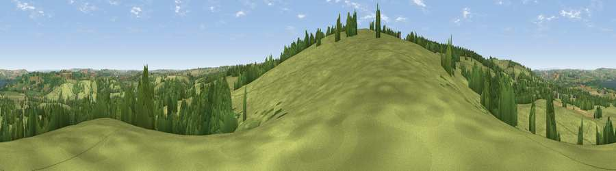

Viewpoint near East Harptree
#13453 in England · top 24% of its area beats it · near East HarptreeWhere it is
The exact computed spot (ST 57125 54475). Click the marker for map links.
The view, rendered

A 360° render of this exact spot computed from the terrain model, tree cover and land cover — summer colours, afternoon light, calibrated against photographs of famous viewpoints. Real trees, hedges and buildings will differ in detail.
The panorama
Grey silhouette: terrain skyline in each direction (720 bearings, Earth curvature and refraction included). Dashed green: skyline with trees (+15 m) and buildings (+8 m) as obstacles. Blue strip: how far the ground is visible on each bearing.
Where the view opens
Wedge length = distance to the farthest visible ground on that bearing (vegetation-aware). Rings at 10, 25 and 50 km.
What fills the view
73% grassland · 21% woodland · 5% cropland ·
Angular shares of the visible panorama (visual magnitude), not map area. Landscape diversity 0.34 (0–1 Shannon).
Key numbers
More beautiful places nearby
The staircase of upgrades: each row has a higher view potential than everything closer. Driving times are estimates from straight-line distance, calibrated against real road routing — check an actual route before setting out.
| Place | Direction | Drive | Score |
|---|---|---|---|
| Niver North Top | SW · 1 km | ~3 min | 61.2 |
| Viewpoint near Ubley | WNW · 5 km | ~11 min | 71.3 |
| Viewpoint near West Horrington | S · 6 km | ~12 min | 73.2 |
| Viewpoint near Wookey Hole | SSW · 7 km | ~14 min | 73.5 |
| Viewpoint near Charterhouse | WNW · 8 km | ~15 min | 74.0 |
| Viewpoint near Rodney Stoke | WSW · 9 km | ~17 min | 75.6 |
| Beacon Batch | WNW · 9 km | ~18 min | 79.4 |
| Bleadon Hill [Loxton Hill] | W · 21 km | ~35 min | 79.6 |
51.28779, -2.61620 · source: screening · position refined by local search. Computed location — check access rights before visiting.